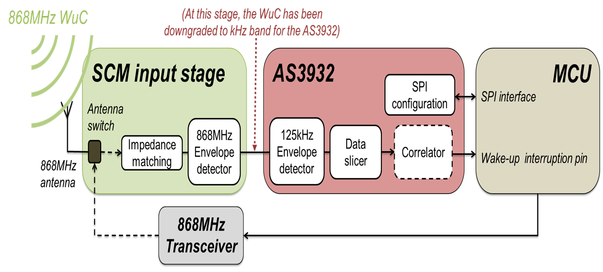
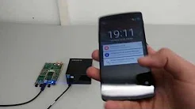
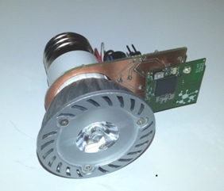
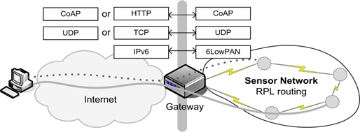

about publications bio academia teaching industry
selected projects |
|
|

Wake-up Radio is a promising technology to enable energy-efficient, rendezvousless communication. 
Implementation and testing of an SDR-based LTE/5G network 
Holistic network performance analysis through WSN testbed experiments:
Analysis of ZigBee, IEEE 802.15.4, and different routing metrics. 
Token-MAC for passive RFID systems to improve fairness and average tag read rate over C1G2 standard. |
5G Transport Networks for a converged, flexible optical and wireless transport network solution. 
Visual Light Communication studies. In the photo: A wireless node controlling an LED to modulate information using light. Papers:
IEEE COMMAG'19,
IEEE CCNC'15,
IEEE Globecom'14.

Advertisement-based MAC protocols for WSN A CSMA-based and a TDMA-based approach using advertisements. 
Internet of Things Congestion control methods based on IETF-protocol CoAP Papers: ACM MSWIM'13 (picture (c)) |